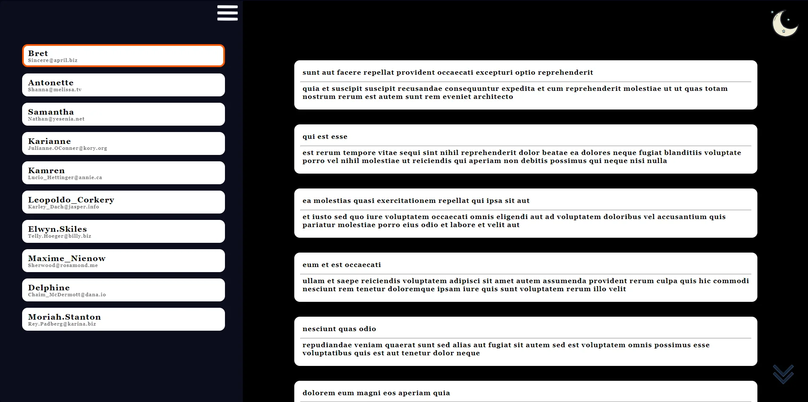

1 - Portfolio 1
My portfolio offers a holistic view of me and my offerings. The 'Home' section connects visitors to my CV and social media, 'About Me' provides background insight, 'Services' and 'Skills' showcase expertise, and 'Contact Me' ensures easy communication—a comprehensive professional identity.

2 - To Do List
This project represents my commitment to designing a customized to-do list system tailored to my unique needs and preferences. Through meticulous planning and innovative solutions, I'm on a quest to streamline my daily tasks and ensure that I can manage my time effectively.

3 - Portfolio 2
Presenting my new portfolio project—simple and functional, with five sections: Home for a brief introduction, About for a deeper dive into my skills, Contact for easy connection, Certificates for achievements, and Projects for showcasing my work.

4 - Earthquake Tracker
I've developed a website tracker to help people stay informed about the latest updates on the Morocco earthquake. This tracker provides real-time data on the number of deaths and injuries, helping individuals and organizations respond more effectively to this natural disaster.

5 - Api Placeholder Version 2
Version 2 comes with some exciting improvements, making the user experience even better. Feel free to explore both and let me know which one you prefer! Your feedback is invaluable, so please take a moment to try it out and share your thoughts.

6 - Morocco Prayer Times
Launched "Prayer Times of Morocco": a user-friendly tool powered by 'aladhan.com,' offering personalized schedules with city filtering for accurate and accessible daily prayer times. Stay tuned for its release and share for the benefit of all. üïå
7 - Template One
Proudly presenting my HTML and CSS project: "Template 1"! Crafted a sleek and responsive website featuring sections for Home, Services, Portfolio, About, and Contact. üíª

8 - Template Two
Template 2," featuring a sleek and functional layout with six sections: Home, Services, Portfolio, About, Pricing, and Contact.

9 - Template Three
Thrilled to unveil my latest web design achievement, "Template 3." This sleek creation boasts six engaging sections, showcasing my prowess in HTML and CSS
10 - Social Media
Launched a dynamic social media-inspired website utilizing a comprehensive API, offering secure interactions and versatile features. Explore home, profile, and post details pages with advanced authentication
11 - XO Game
launched my very own Tic Tac Toe game! üí° Developed from scratch with HTML, CSS, and JavaScript. Big thanks to Yarob Al Mostafa for the amazing tutorial that guided me through the process!

12 - World Cup 2022
Created FIFA World Cup 2022 web app using HTML, CSS, JS, and API for live data. Designed intuitive, responsive interface. Used Axios for async data fetching, ensuring real-time updates. Tested for compatibility.
ee

13 - Tourst Wep Application
Discover Morocco's cities, chat with a bot for details. Developed by Ayoub Majjid and Rochdi, this web app offers login/register options for users seeking personalized experiences in exploring Morocco's rich cultural heritage.

14 - Poste de Maroc Application
Our project aimed to merge the "Courier" and "Coles" interfaces into a single, seamless platform, eliminating the need for multiple logins and accounts. This new system not only simplifies processes but also empowers employees with more efficient tools.

15 - CNIPE Courses Platform
I am developing a platform similar to Udemy, integrating secure user authentication and a rich catalog of formations and courses. Users can comment, review, and enroll in courses. The system accommodates owners, admins, and regular users

16 - Haelt Portfolio
the Portfolio of a Construction Company (Haelt)! üìä a simple portfolio website for a construction company. This project highlights various completed projects, showcasing essential details such as project amount, execution date, and the project owner.
17 - React Todo List
I'm thrilled to announce the completion of my very first project using React, a simple To-Do List application that allows users to manage their tasks efficiently. This project has been an incredible journey, enhancing my skills in front-end development.

18 - Stay Reservation App
I'm excited to share my second React project: a Weather App providing real-time weather updates for cities across Morocco, featuring multi-language support and a modern interface.
19 - Stock Management Application
Developed a stock management application for e-commerce platforms using .NET. It streamlines inventory tracking, enhances order management, and provides real-time stock updates to optimize business operations.